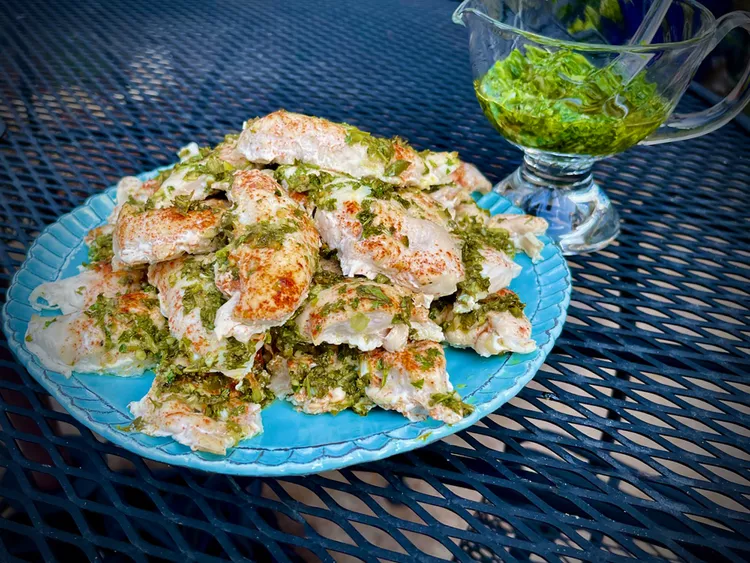

Chimichurri Chicken

Description
Cimichurri chicken tenders for a crowd cook up quickly in the oven, with
fresh, herby flavor from chimichurri. Make the chimichurri sauce the day
before, if you like, and simply refrigerate in a sealed container until
you are ready to bake. We like this with Mexican rice, black beans, and a
simple green salad.
Ingredients
- 1 cup packed fresh parsley leaves
- 2 tablespoons fresh oregano leaves
- 1 tablespoon minced garlic
- ½ cup chopped green onion (including green tops)
- 1 jalapeño pepper, seeds and membranes removed, diced
- 2 tablespoons white wine vinegar
- 1 tablespoon fresh lemon juice
- ½ cup olive oil
- salt and freshly ground black pepper to taste
- 3 pounds chicken tenders
- 1 ½ teaspoons smoked paprika
Steps
-
Preheat the oven to 375 degrees F (190 degrees C). Line a 12x18-inch
sheet pan with parchment or aluminum foil; set aside.
-
Combine parsley, oregano, garlic, green onions, and jalapeño in the bowl
of a food processor. Pulse just a few times to break up the parsley and
combine the ingredients. Place processed vegetables in a small bowl;
stir in vinegar, lemon juice, and olive oil. Season with salt and black
pepper.
-
Place chicken tenders in a single layer on the prepared pan. Lightly
season with salt and pepper; sprinkle smoked paprika evenly over the
tenders. Spoon half of the chimichurri evenly over the tenders. Reserve
remaining half of chimichurri, covered, in the refrigerator to use
later.
-
Bake in the preheated oven until chicken is no longer pink in the center
and the juices run clear, about 18 minutes. An instant-read thermometer
inserted into the center should read at least 165 degrees F (74 degrees
C).
-
Serve tenders with reserved chimichurri sauce.Serve tenders with
reserved chimichurri sauce.
Source
Home page